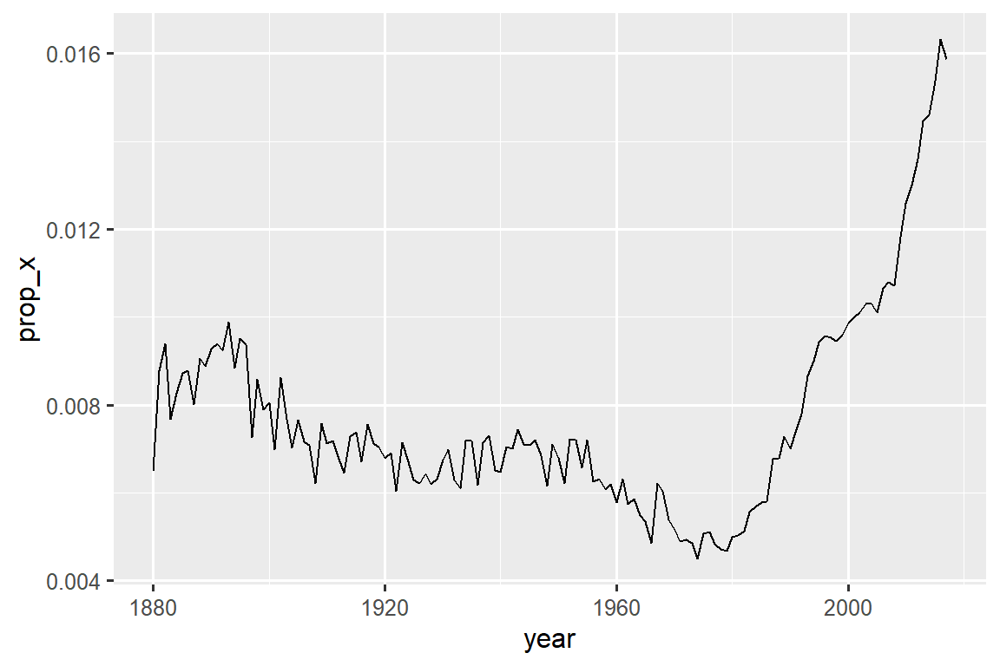

library(tidyverse)
#> Warning: package 'tidyverse' was built under R version 4.2.3
#> Warning: package 'ggplot2' was built under R version 4.2.3
#> Warning: package 'tibble' was built under R version 4.2.3
#> Warning: package 'tidyr' was built under R version 4.2.3
#> Warning: package 'readr' was built under R version 4.2.3
#> Warning: package 'purrr' was built under R version 4.2.3
#> Warning: package 'dplyr' was built under R version 4.2.3
#> Warning: package 'stringr' was built under R version 4.2.2
#> Warning: package 'forcats' was built under R version 4.2.3
#> Warning: package 'lubridate' was built under R version 4.2.3
library(babynames)
#> Warning: package 'babynames' was built under R version 4.2.316 Regular expressions
You are reading the work-in-progress second edition of R for Data Science. This chapter is largely complete and just needs final proof reading. You can find the complete first edition at https://r4ds.had.co.nz.
16.1 Introduction
In Chapter 15, you learned a whole bunch of useful functions for working with strings. This chapter will focus on functions that use regular expressions, a concise and powerful language for describing patterns within strings. The term “regular expression” is a bit of a mouthful, so most people abbreviate it to “regex”1 or “regexp”.
The chapter starts with the basics of regular expressions and the most useful stringr functions for data analysis. We’ll then expand your knowledge of patterns and cover seven important new topics (escaping, anchoring, character classes, shorthand classes, quantifiers, precedence, and grouping). Next, we’ll talk about some of the other types of patterns that stringr functions can work with and the various “flags” that allow you to tweak the operation of regular expressions. We’ll finish with a survey of other places in the tidyverse and base R where you might use regexes.
16.1.1 Prerequisites
In this chapter, we’ll use regular expression functions from stringr and tidyr, both core members of the tidyverse, as well as data from the babynames package.
Through this chapter, we’ll use a mix of very simple inline examples so you can get the basic idea, the baby names data, and three character vectors from stringr:
-
fruitcontains the names of 80 fruits. -
wordscontains 980 common English words. -
sentencescontains 720 short sentences.
16.2 Pattern basics
We’ll use str_view() to learn how regex patterns work. We used str_view() in the last chapter to better understand a string vs. its printed representation, and now we’ll use it with its second argument, a regular expression. When this is supplied, str_view() will show only the elements of the string vector that match, surrounding each match with <>, and, where possible, highlighting the match in blue.
The simplest patterns consist of letters and numbers which match those characters exactly:
str_view(fruit, "berry")
#> [6] │ bil<berry>
#> [7] │ black<berry>
#> [10] │ blue<berry>
#> [11] │ boysen<berry>
#> [19] │ cloud<berry>
#> [21] │ cran<berry>
#> ... and 8 moreLetters and numbers match exactly and are called literal characters. Most punctuation characters, like ., +, *, [, ], and ?, have special meanings2 and are called metacharacters. For example, . will match any character3, so "a." will match any string that contains an “a” followed by another character :
Or we could find all the fruits that contain an “a”, followed by three letters, followed by an “e”:
str_view(fruit, "a...e")
#> [1] │ <apple>
#> [7] │ bl<ackbe>rry
#> [48] │ mand<arine>
#> [51] │ nect<arine>
#> [62] │ pine<apple>
#> [64] │ pomegr<anate>
#> ... and 2 moreQuantifiers control how many times a pattern can match:
-
?makes a pattern optional (i.e. it matches 0 or 1 times) -
+lets a pattern repeat (i.e. it matches at least once) -
*lets a pattern be optional or repeat (i.e. it matches any number of times, including 0).
# ab? matches an "a", optionally followed by a "b".
str_view(c("a", "ab", "abb"), "ab?")
#> [1] │ <a>
#> [2] │ <ab>
#> [3] │ <ab>b
# ab+ matches an "a", followed by at least one "b".
str_view(c("a", "ab", "abb"), "ab+")
#> [2] │ <ab>
#> [3] │ <abb>
# ab* matches an "a", followed by any number of "b"s.
str_view(c("a", "ab", "abb"), "ab*")
#> [1] │ <a>
#> [2] │ <ab>
#> [3] │ <abb>Character classes are defined by [] and let you match a set of characters, e.g., [abcd] matches “a”, “b”, “c”, or “d”. You can also invert the match by starting with ^: [^abcd] matches anything except “a”, “b”, “c”, or “d”. We can use this idea to find the words containing an “x” surrounded by vowels, or a “y” surrounded by consonants:
You can use alternation, |, to pick between one or more alternative patterns. For example, the following patterns look for fruits containing “apple”, “melon”, or “nut”, or a repeated vowel.
str_view(fruit, "apple|melon|nut")
#> [1] │ <apple>
#> [13] │ canary <melon>
#> [20] │ coco<nut>
#> [52] │ <nut>
#> [62] │ pine<apple>
#> [72] │ rock <melon>
#> ... and 1 more
str_view(fruit, "aa|ee|ii|oo|uu")
#> [9] │ bl<oo>d orange
#> [33] │ g<oo>seberry
#> [47] │ lych<ee>
#> [66] │ purple mangost<ee>nRegular expressions are very compact and use a lot of punctuation characters, so they can seem overwhelming and hard to read at first. Don’t worry; you’ll get better with practice, and simple patterns will soon become second nature. Let’s kick off that process by practicing with some useful stringr functions.
16.3 Key functions
Now that you’ve got the basics of regular expressions under your belt, let’s use them with some stringr and tidyr functions. In the following section, you’ll learn how to detect the presence or absence of a match, how to count the number of matches, how to replace a match with fixed text, and how to extract text using a pattern.
16.3.1 Detect matches
str_detect() returns a logical vector that is TRUE if the pattern matches an element of the character vector and FALSE otherwise:
str_detect(c("a", "b", "c"), "[aeiou]")
#> [1] TRUE FALSE FALSESince str_detect() returns a logical vector of the same length as the initial vector, it pairs well with filter(). For example, this code finds all the most popular names containing a lower-case “x”:
babynames |>
filter(str_detect(name, "x")) |>
count(name, wt = n, sort = TRUE)
#> # A tibble: 974 × 2
#> name n
#> <chr> <int>
#> 1 Alexander 665492
#> 2 Alexis 399551
#> 3 Alex 278705
#> 4 Alexandra 232223
#> 5 Max 148787
#> 6 Alexa 123032
#> # ℹ 968 more rowsWe can also use str_detect() with summarize() by pairing it with sum() or mean(): sum(str_detect(x, pattern)) tells you the number of observations that match and mean(str_detect(x, pattern)) tells you the proportion that match. For example, the following snippet computes and visualizes the proportion of baby names4 that contain “x”, broken down by year. It looks like they’ve radically increased in popularity lately!
babynames |>
group_by(year) |>
summarize(prop_x = mean(str_detect(name, "x"))) |>
ggplot(aes(x = year, y = prop_x)) +
geom_line()
There are two functions that are closely related to str_detect(): str_subset() and str_which(). str_subset() returns a character vector containing only the strings that match. str_which() returns an integer vector giving the positions of the strings that match.
16.3.2 Count matches
The next step up in complexity from str_detect() is str_count(): rather than a true or false, it tells you how many matches there are in each string.
Note that each match starts at the end of the previous match, i.e. regex matches never overlap. For example, in "abababa", how many times will the pattern "aba" match? Regular expressions say two, not three:
It’s natural to use str_count() with mutate(). The following example uses str_count() with character classes to count the number of vowels and consonants in each name.
babynames |>
count(name) |>
mutate(
vowels = str_count(name, "[aeiou]"),
consonants = str_count(name, "[^aeiou]")
)
#> # A tibble: 97,310 × 4
#> name n vowels consonants
#> <chr> <int> <int> <int>
#> 1 Aaban 10 2 3
#> 2 Aabha 5 2 3
#> 3 Aabid 2 2 3
#> 4 Aabir 1 2 3
#> 5 Aabriella 5 4 5
#> 6 Aada 1 2 2
#> # ℹ 97,304 more rowsIf you look closely, you’ll notice that there’s something off with our calculations: “Aaban” contains three “a”s, but our summary reports only two vowels. That’s because regular expressions are case sensitive. There are three ways we could fix this:
- Add the upper case vowels to the character class:
str_count(name, "[aeiouAEIOU]"). - Tell the regular expression to ignore case:
str_count(name, regex("[aeiou]", ignore_case = TRUE)). We’ll talk about more in Section 16.5.1. - Use
str_to_lower()to convert the names to lower case:str_count(str_to_lower(name), "[aeiou]").
This variety of approaches is pretty typical when working with strings — there are often multiple ways to reach your goal, either by making your pattern more complicated or by doing some preprocessing on your string. If you get stuck trying one approach, it can often be useful to switch gears and tackle the problem from a different perspective.
In this case, since we’re applying two functions to the name, I think it’s easier to transform it first:
babynames |>
count(name) |>
mutate(
name = str_to_lower(name),
vowels = str_count(name, "[aeiou]"),
consonants = str_count(name, "[^aeiou]")
)
#> # A tibble: 97,310 × 4
#> name n vowels consonants
#> <chr> <int> <int> <int>
#> 1 aaban 10 3 2
#> 2 aabha 5 3 2
#> 3 aabid 2 3 2
#> 4 aabir 1 3 2
#> 5 aabriella 5 5 4
#> 6 aada 1 3 1
#> # ℹ 97,304 more rows16.3.3 Replace values
As well as detecting and counting matches, we can also modify them with str_replace() and str_replace_all(). str_replace() replaces the first match, and as the name suggests, str_replace_all() replaces all matches.
x <- c("apple", "pear", "banana")
str_replace_all(x, "[aeiou]", "-")
#> [1] "-ppl-" "p--r" "b-n-n-"str_remove() and str_remove_all() are handy shortcuts for str_replace(x, pattern, ""):
x <- c("apple", "pear", "banana")
str_remove_all(x, "[aeiou]")
#> [1] "ppl" "pr" "bnn"These functions are naturally paired with mutate() when doing data cleaning, and you’ll often apply them repeatedly to peel off layers of inconsistent formatting.
16.3.4 Extract variables
The last function we’ll discuss uses regular expressions to extract data out of one column into one or more new columns: separate_wider_regex(). It’s a peer of the separate_wider_position() and separate_wider_delim() functions that you learned about in Section 15.4.2. These functions live in tidyr because they operate on (columns of) data frames, rather than individual vectors.
Let’s create a simple dataset to show how it works. Here we have some data derived from babynames where we have the name, gender, and age of a bunch of people in a rather weird format5:
df <- tribble(
~str,
"<Sheryl>-F_34",
"<Kisha>-F_45",
"<Brandon>-N_33",
"<Sharon>-F_38",
"<Penny>-F_58",
"<Justin>-M_41",
"<Patricia>-F_84",
)To extract this data using separate_wider_regex() we just need to construct a sequence of regular expressions that match each piece. If we want the contents of that piece to appear in the output, we give it a name:
df |>
separate_wider_regex(
str,
patterns = c(
"<",
name = "[A-Za-z]+",
">-",
gender = ".", "_",
age = "[0-9]+"
)
)
#> # A tibble: 7 × 3
#> name gender age
#> <chr> <chr> <chr>
#> 1 Sheryl F 34
#> 2 Kisha F 45
#> 3 Brandon N 33
#> 4 Sharon F 38
#> 5 Penny F 58
#> 6 Justin M 41
#> # ℹ 1 more rowIf the match fails, you can use too_short = "debug" to figure out what went wrong, just like separate_wider_delim() and separate_wider_position().
16.3.5 Exercises
What baby name has the most vowels? What name has the highest proportion of vowels? (Hint: what is the denominator?)
Replace all forward slashes in
"a/b/c/d/e"with backslashes. What happens if you attempt to undo the transformation by replacing all backslashes with forward slashes? (We’ll discuss the problem very soon.)Implement a simple version of
str_to_lower()usingstr_replace_all().Create a regular expression that will match telephone numbers as commonly written in your country.
16.4 Pattern details
Now that you understand the basics of the pattern language and how to use it with some stringr and tidyr functions, it’s time to dig into more of the details. First, we’ll start with escaping, which allows you to match metacharacters that would otherwise be treated specially. Next, you’ll learn about anchors which allow you to match the start or end of the string. Then, you’ll learn more about character classes and their shortcuts which allow you to match any character from a set. Next, you’ll learn the final details of quantifiers which control how many times a pattern can match. Then, we have to cover the important (but complex) topic of operator precedence and parentheses. And we’ll finish off with some details of grouping components of the pattern.
The terms we use here are the technical names for each component. They’re not always the most evocative of their purpose, but it’s very helpful to know the correct terms if you later want to Google for more details.
16.4.1 Escaping
In order to match a literal ., you need an escape which tells the regular expression to match metacharacters6 literally. Like strings, regexps use the backslash for escaping. So, to match a ., you need the regexp \.. Unfortunately this creates a problem. We use strings to represent regular expressions, and \ is also used as an escape symbol in strings. So to create the regular expression \. we need the string "\\.", as the following example shows.
In this book, we’ll usually write regular expression without quotes, like \.. If we need to emphasize what you’ll actually type, we’ll surround it with quotes and add extra escapes, like "\\.".
If \ is used as an escape character in regular expressions, how do you match a literal \? Well, you need to escape it, creating the regular expression \\. To create that regular expression, you need to use a string, which also needs to escape \. That means to match a literal \ you need to write "\\\\" — you need four backslashes to match one!
Alternatively, you might find it easier to use the raw strings you learned about in Section 15.2.2). That lets you avoid one layer of escaping:
str_view(x, r"{\\}")
#> [1] │ a<\>bIf you’re trying to match a literal ., $, |, *, +, ?, {, }, (, ), there’s an alternative to using a backslash escape: you can use a character class: [.], [$], [|], ... all match the literal values.
16.4.2 Anchors
By default, regular expressions will match any part of a string. If you want to match at the start or end you need to anchor the regular expression using ^ to match the start or $ to match the end:
It’s tempting to think that $ should match the start of a string, because that’s how we write dollar amounts, but that’s not what regular expressions want.
To force a regular expression to match only the full string, anchor it with both ^ and $:
You can also match the boundary between words (i.e. the start or end of a word) with \b. This can be particularly useful when using RStudio’s find and replace tool. For example, if to find all uses of sum(), you can search for \bsum\b to avoid matching summarize, summary, rowsum and so on:
When used alone, anchors will produce a zero-width match:
This helps you understand what happens when you replace a standalone anchor:
str_replace_all("abc", c("$", "^", "\\b"), "--")
#> [1] "abc--" "--abc" "--abc--"16.4.3 Character classes
A character class, or character set, allows you to match any character in a set. As we discussed above, you can construct your own sets with [], where [abc] matches “a”, “b”, or “c” and [^abc] matches any character except “a”, “b”, or “c”. Apart from ^ there are two other characters that have special meaning inside of []:
-
-defines a range, e.g.,[a-z]matches any lower case letter and[0-9]matches any number. -
\escapes special characters, so[\^\-\]]matches^,-, or].
Here are few examples:
x <- "abcd ABCD 12345 -!@#%."
str_view(x, "[abc]+")
#> [1] │ <abc>d ABCD 12345 -!@#%.
str_view(x, "[a-z]+")
#> [1] │ <abcd> ABCD 12345 -!@#%.
str_view(x, "[^a-z0-9]+")
#> [1] │ abcd< ABCD >12345< -!@#%.>
# You need an escape to match characters that are otherwise
# special inside of []
str_view("a-b-c", "[a-c]")
#> [1] │ <a>-<b>-<c>
str_view("a-b-c", "[a\\-c]")
#> [1] │ <a><->b<-><c>Some character classes are used so commonly that they get their own shortcut. You’ve already seen ., which matches any character apart from a newline. There are three other particularly useful pairs7:
-
\dmatches any digit;\Dmatches anything that isn’t a digit. -
\smatches any whitespace (e.g., space, tab, newline);\Smatches anything that isn’t whitespace. -
\wmatches any “word” character, i.e. letters and numbers;\Wmatches any “non-word” character.
The following code demonstrates the six shortcuts with a selection of letters, numbers, and punctuation characters.
x <- "abcd ABCD 12345 -!@#%."
str_view(x, "\\d+")
#> [1] │ abcd ABCD <12345> -!@#%.
str_view(x, "\\D+")
#> [1] │ <abcd ABCD >12345< -!@#%.>
str_view(x, "\\s+")
#> [1] │ abcd< >ABCD< >12345< >-!@#%.
str_view(x, "\\S+")
#> [1] │ <abcd> <ABCD> <12345> <-!@#%.>
str_view(x, "\\w+")
#> [1] │ <abcd> <ABCD> <12345> -!@#%.
str_view(x, "\\W+")
#> [1] │ abcd< >ABCD< >12345< -!@#%.>16.4.4 Quantifiers
Quantifiers control how many times a pattern matches. In Section 16.2 you learned about ? (0 or 1 matches), + (1 or more matches), and * (0 or more matches). For example, colou?r will match American or British spelling, \d+ will match one or more digits, and \s? will optionally match a single item of whitespace. You can also specify the number of matches precisely with {}:
-
{n}matches exactly n times. -
{n,}matches at least n times. -
{n,m}matches between n and m times.
16.4.5 Operator precedence and parentheses
What does ab+ match? Does it match “a” followed by one or more “b”s, or does it match “ab” repeated any number of times? What does ^a|b$ match? Does it match the complete string a or the complete string b, or does it match a string starting with a or a string ending with b?
The answer to these questions is determined by operator precedence, similar to the PEMDAS or BEDMAS rules you might have learned in school. You know that a + b * c is equivalent to a + (b * c) not (a + b) * c because * has higher precedence and + has lower precedence: you compute * before +.
Similarly, regular expressions have their own precedence rules: quantifiers have high precedence and alternation has low precedence which means that ab+ is equivalent to a(b+), and ^a|b$ is equivalent to (^a)|(b$). Just like with algebra, you can use parentheses to override the usual order. But unlike algebra you’re unlikely to remember the precedence rules for regexes, so feel free to use parentheses liberally.
16.4.6 Grouping and capturing
As well as overriding operator precedence, parentheses have another important effect: they create capturing groups that allow you to use sub-components of the match.
The first way to use a capturing group is to refer back to it within a match with back reference: \1 refers to the match contained in the first parenthesis, \2 in the second parenthesis, and so on. For example, the following pattern finds all fruits that have a repeated pair of letters:
str_view(fruit, "(..)\\1")
#> [4] │ b<anan>a
#> [20] │ <coco>nut
#> [22] │ <cucu>mber
#> [41] │ <juju>be
#> [56] │ <papa>ya
#> [73] │ s<alal> berryAnd this one finds all words that start and end with the same pair of letters:
str_view(words, "^(..).*\\1$")
#> [152] │ <church>
#> [217] │ <decide>
#> [617] │ <photograph>
#> [699] │ <require>
#> [739] │ <sense>You can also use back references in str_replace(). For example, this code switches the order of the second and third words in sentences:
sentences |>
str_replace("(\\w+) (\\w+) (\\w+)", "\\1 \\3 \\2") |>
str_view()
#> [1] │ The canoe birch slid on the smooth planks.
#> [2] │ Glue sheet the to the dark blue background.
#> [3] │ It's to easy tell the depth of a well.
#> [4] │ These a days chicken leg is a rare dish.
#> [5] │ Rice often is served in round bowls.
#> [6] │ The of juice lemons makes fine punch.
#> ... and 714 moreIf you want to extract the matches for each group you can use str_match(). But str_match() returns a matrix, so it’s not particularly easy to work with8:
You could convert to a tibble and name the columns:
sentences |>
str_match("the (\\w+) (\\w+)") |>
as_tibble(.name_repair = "minimal") |>
set_names("match", "word1", "word2")
#> # A tibble: 720 × 3
#> match word1 word2
#> <chr> <chr> <chr>
#> 1 the smooth planks smooth planks
#> 2 the sheet to sheet to
#> 3 the depth of depth of
#> 4 <NA> <NA> <NA>
#> 5 <NA> <NA> <NA>
#> 6 <NA> <NA> <NA>
#> # ℹ 714 more rowsBut then you’ve basically recreated your own version of separate_wider_regex(). Indeed, behind the scenes, separate_wider_regex() converts your vector of patterns to a single regex that uses grouping to capture the named components.
Occasionally, you’ll want to use parentheses without creating matching groups. You can create a non-capturing group with (?:).
16.4.7 Exercises
How would you match the literal string
"'\? How about"$^$"?Explain why each of these patterns don’t match a
\:"\","\\","\\\".-
Given the corpus of common words in
stringr::words, create regular expressions that find all words that:- Start with “y”.
- Don’t start with “y”.
- End with “x”.
- Are exactly three letters long. (Don’t cheat by using
str_length()!) - Have seven letters or more.
- Contain a vowel-consonant pair.
- Contain at least two vowel-consonant pairs in a row.
- Only consist of repeated vowel-consonant pairs.
Create 11 regular expressions that match the British or American spellings for each of the following words: airplane/aeroplane, aluminum/aluminium, analog/analogue, ass/arse, center/centre, defense/defence, donut/doughnut, gray/grey, modeling/modelling, skeptic/sceptic, summarize/summarise. Try and make the shortest possible regex!
Switch the first and last letters in
words. Which of those strings are stillwords?-
Describe in words what these regular expressions match: (read carefully to see if each entry is a regular expression or a string that defines a regular expression.)
^.*$"\\{.+\\}"\d{4}-\d{2}-\d{2}"\\\\{4}"\..\..\..(.)\1\1"(..)\\1"
Solve the beginner regexp crosswords at https://regexcrossword.com/challenges/beginner.
16.5 Pattern control
It’s possible to exercise extra control over the details of the match by using a pattern object instead of just a string. This allows you to control the so called regex flags and match various types of fixed strings, as described below.
16.5.1 Regex flags
There are a number of settings that can be used to control the details of the regexp. These settings are often called flags in other programming languages. In stringr, you can use these by wrapping the pattern in a call to regex(). The most useful flag is probably ignore_case = TRUE because it allows characters to match either their uppercase or lowercase forms:
If you’re doing a lot of work with multiline strings (i.e. strings that contain \n), dotalland multiline may also be useful:
-
dotall = TRUElets.match everything, including\n: -
multiline = TRUEmakes^and$match the start and end of each line rather than the start and end of the complete string:
Finally, if you’re writing a complicated regular expression and you’re worried you might not understand it in the future, you might try comments = TRUE. It tweaks the pattern language to ignore spaces and new lines, as well as everything after #. This allows you to use comments and whitespace to make complex regular expressions more understandable9, as in the following example:
phone <- regex(
r"(
\(? # optional opening parens
(\d{3}) # area code
[)\-]? # optional closing parens or dash
\ ? # optional space
(\d{3}) # another three numbers
[\ -]? # optional space or dash
(\d{4}) # four more numbers
)",
comments = TRUE
)
str_extract(c("514-791-8141", "(123) 456 7890", "123456"), phone)
#> [1] "514-791-8141" "(123) 456 7890" NAIf you’re using comments and want to match a space, newline, or #, you’ll need to escape it with \.
16.5.2 Fixed matches
You can opt-out of the regular expression rules by using fixed():
fixed() also gives you the ability to ignore case:
If you’re working with non-English text, you will probably want coll() instead of fixed(), as it implements the full rules for capitalization as used by the locale you specify. See Section 15.6 for more details on locales.
16.6 Practice
To put these ideas into practice we’ll solve a few semi-authentic problems next. We’ll discuss three general techniques:
- checking your work by creating simple positive and negative controls
- combining regular expressions with Boolean algebra
- creating complex patterns using string manipulation
16.6.1 Check your work
First, let’s find all sentences that start with “The”. Using the ^ anchor alone is not enough:
str_view(sentences, "^The")
#> [1] │ <The> birch canoe slid on the smooth planks.
#> [4] │ <The>se days a chicken leg is a rare dish.
#> [6] │ <The> juice of lemons makes fine punch.
#> [7] │ <The> box was thrown beside the parked truck.
#> [8] │ <The> hogs were fed chopped corn and garbage.
#> [11] │ <The> boy was there when the sun rose.
#> ... and 271 moreBecause that pattern also matches sentences starting with words like They or These. We need to make sure that the “e” is the last letter in the word, which we can do by adding a word boundary:
str_view(sentences, "^The\\b")
#> [1] │ <The> birch canoe slid on the smooth planks.
#> [6] │ <The> juice of lemons makes fine punch.
#> [7] │ <The> box was thrown beside the parked truck.
#> [8] │ <The> hogs were fed chopped corn and garbage.
#> [11] │ <The> boy was there when the sun rose.
#> [13] │ <The> source of the huge river is the clear spring.
#> ... and 250 moreWhat about finding all sentences that begin with a pronoun?
str_view(sentences, "^She|He|It|They\\b")
#> [3] │ <It>'s easy to tell the depth of a well.
#> [15] │ <He>lp the woman get back to her feet.
#> [27] │ <He>r purse was full of useless trash.
#> [29] │ <It> snowed, rained, and hailed the same morning.
#> [63] │ <He> ran half way to the hardware store.
#> [90] │ <He> lay prone and hardly moved a limb.
#> ... and 57 moreA quick inspection of the results shows that we’re getting some spurious matches. That’s because we’ve forgotten to use parentheses:
str_view(sentences, "^(She|He|It|They)\\b")
#> [3] │ <It>'s easy to tell the depth of a well.
#> [29] │ <It> snowed, rained, and hailed the same morning.
#> [63] │ <He> ran half way to the hardware store.
#> [90] │ <He> lay prone and hardly moved a limb.
#> [116] │ <He> ordered peach pie with ice cream.
#> [127] │ <It> caught its hind paw in a rusty trap.
#> ... and 51 moreYou might wonder how you might spot such a mistake if it didn’t occur in the first few matches. A good technique is to create a few positive and negative matches and use them to test that your pattern works as expected:
pos <- c("He is a boy", "She had a good time")
neg <- c("Shells come from the sea", "Hadley said 'It's a great day'")
pattern <- "^(She|He|It|They)\\b"
str_detect(pos, pattern)
#> [1] TRUE TRUE
str_detect(neg, pattern)
#> [1] FALSE FALSEIt’s typically much easier to come up with good positive examples than negative examples, because it takes a while before you’re good enough with regular expressions to predict where your weaknesses are. Nevertheless, they’re still useful: as you work on the problem you can slowly accumulate a collection of your mistakes, ensuring that you never make the same mistake twice.
16.6.2 Boolean operations
Imagine we want to find words that only contain consonants. One technique is to create a character class that contains all letters except for the vowels ([^aeiou]), then allow that to match any number of letters ([^aeiou]+), then force it to match the whole string by anchoring to the beginning and the end (^[^aeiou]+$):
str_view(words, "^[^aeiou]+$")
#> [123] │ <by>
#> [249] │ <dry>
#> [328] │ <fly>
#> [538] │ <mrs>
#> [895] │ <try>
#> [952] │ <why>But you can make this problem a bit easier by flipping the problem around. Instead of looking for words that contain only consonants, we could look for words that don’t contain any vowels:
str_view(words[!str_detect(words, "[aeiou]")])
#> [1] │ by
#> [2] │ dry
#> [3] │ fly
#> [4] │ mrs
#> [5] │ try
#> [6] │ whyThis is a useful technique whenever you’re dealing with logical combinations, particularly those involving “and” or “not”. For example, imagine if you want to find all words that contain “a” and “b”. There’s no “and” operator built in to regular expressions so we have to tackle it by looking for all words that contain an “a” followed by a “b”, or a “b” followed by an “a”:
str_view(words, "a.*b|b.*a")
#> [2] │ <ab>le
#> [3] │ <ab>out
#> [4] │ <ab>solute
#> [62] │ <availab>le
#> [66] │ <ba>by
#> [67] │ <ba>ck
#> ... and 24 moreIt’s simpler to combine the results of two calls to str_detect():
words[str_detect(words, "a") & str_detect(words, "b")]
#> [1] "able" "about" "absolute" "available" "baby" "back"
#> [7] "bad" "bag" "balance" "ball" "bank" "bar"
#> [13] "base" "basis" "bear" "beat" "beauty" "because"
#> [19] "black" "board" "boat" "break" "brilliant" "britain"
#> [25] "debate" "husband" "labour" "maybe" "probable" "table"What if we wanted to see if there was a word that contains all vowels? If we did it with patterns we’d need to generate 5! (120) different patterns:
words[str_detect(words, "a.*e.*i.*o.*u")]
# ...
words[str_detect(words, "u.*o.*i.*e.*a")]It’s much simpler to combine five calls to str_detect():
words[
str_detect(words, "a") &
str_detect(words, "e") &
str_detect(words, "i") &
str_detect(words, "o") &
str_detect(words, "u")
]
#> character(0)In general, if you get stuck trying to create a single regexp that solves your problem, take a step back and think if you could break the problem down into smaller pieces, solving each challenge before moving onto the next one.
16.6.3 Creating a pattern with code
What if we wanted to find all sentences that mention a color? The basic idea is simple: we just combine alternation with word boundaries.
str_view(sentences, "\\b(red|green|blue)\\b")
#> [2] │ Glue the sheet to the dark <blue> background.
#> [26] │ Two <blue> fish swam in the tank.
#> [92] │ A wisp of cloud hung in the <blue> air.
#> [148] │ The spot on the blotter was made by <green> ink.
#> [160] │ The sofa cushion is <red> and of light weight.
#> [174] │ The sky that morning was clear and bright <blue>.
#> ... and 20 moreBut as the number of colors grows, it would quickly get tedious to construct this pattern by hand. Wouldn’t it be nice if we could store the colors in a vector?
rgb <- c("red", "green", "blue")Well, we can! We’d just need to create the pattern from the vector using str_c() and str_flatten():
str_c("\\b(", str_flatten(rgb, "|"), ")\\b")
#> [1] "\\b(red|green|blue)\\b"We could make this pattern more comprehensive if we had a good list of colors. One place we could start from is the list of built-in colors that R can use for plots:
But lets first eliminate the numbered variants:
cols <- colors()
cols <- cols[!str_detect(cols, "\\d")]
str_view(cols)
#> [1] │ white
#> [2] │ aliceblue
#> [3] │ antiquewhite
#> [4] │ aquamarine
#> [5] │ azure
#> [6] │ beige
#> ... and 137 moreThen we can turn this into one giant pattern. We won’t show the pattern here because it’s huge, but you can see it working:
pattern <- str_c("\\b(", str_flatten(cols, "|"), ")\\b")
str_view(sentences, pattern)
#> [2] │ Glue the sheet to the dark <blue> background.
#> [12] │ A rod is used to catch <pink> <salmon>.
#> [26] │ Two <blue> fish swam in the tank.
#> [66] │ Cars and busses stalled in <snow> drifts.
#> [92] │ A wisp of cloud hung in the <blue> air.
#> [112] │ Leaves turn <brown> and <yellow> in the fall.
#> ... and 57 moreIn this example, cols only contains numbers and letters so you don’t need to worry about metacharacters. But in general, whenever you create patterns from existing strings it’s wise to run them through str_escape() to ensure they match literally.
16.6.4 Exercises
-
For each of the following challenges, try solving it by using both a single regular expression, and a combination of multiple
str_detect()calls.- Find all
wordsthat start or end withx. - Find all
wordsthat start with a vowel and end with a consonant. - Are there any
wordsthat contain at least one of each different vowel?
- Find all
Construct patterns to find evidence for and against the rule “i before e except after c”?
colors()contains a number of modifiers like “lightgray” and “darkblue”. How could you automatically identify these modifiers? (Think about how you might detect and then removed the colors that are modified).Create a regular expression that finds any base R dataset. You can get a list of these datasets via a special use of the
data()function:data(package = "datasets")$results[, "Item"]. Note that a number of old datasets are individual vectors; these contain the name of the grouping “data frame” in parentheses, so you’ll need to strip those off.
16.7 Regular expressions in other places
Just like in the stringr and tidyr functions, there are many other places in R where you can use regular expressions. The following sections describe some other useful functions in the wider tidyverse and base R.
16.7.1 tidyverse
There are three other particularly useful places where you might want to use a regular expressions
matches(pattern)will select all variables whose name matches the supplied pattern. It’s a “tidyselect” function that you can use anywhere in any tidyverse function that selects variables (e.g.,select(),rename_with()andacross()).pivot_longer()'snames_patternargument takes a vector of regular expressions, just likeseparate_wider_regex(). It’s useful when extracting data out of variable names with a complex structureThe
delimargument inseparate_longer_delim()andseparate_wider_delim()usually matches a fixed string, but you can useregex()to make it match a pattern. This is useful, for example, if you want to match a comma that is optionally followed by a space, i.e.regex(", ?").
16.7.2 Base R
apropos(pattern) searches all objects available from the global environment that match the given pattern. This is useful if you can’t quite remember the name of a function:
apropos("replace")
#> [1] "%+replace%" "replace" "replace_na"
#> [4] "setReplaceMethod" "str_replace" "str_replace_all"
#> [7] "str_replace_na" "theme_replace"list.files(path, pattern) lists all files in path that match a regular expression pattern. For example, you can find all the R Markdown files in the current directory with:
head(list.files(pattern = "\\.Rmd$"))
#> character(0)It’s worth noting that the pattern language used by base R is very slightly different to that used by stringr. That’s because stringr is built on top of the stringi package, which is in turn built on top of the ICU engine, whereas base R functions use either the TRE engine or the PCRE engine, depending on whether or not you’ve set perl = TRUE. Fortunately, the basics of regular expressions are so well established that you’ll encounter few variations when working with the patterns you’ll learn in this book. You only need to be aware of the difference when you start to rely on advanced features like complex Unicode character ranges or special features that use the (?…) syntax.
16.8 Summary
With every punctuation character potentially overloaded with meaning, regular expressions are one of the most compact languages out there. They’re definitely confusing at first but as you train your eyes to read them and your brain to understand them, you unlock a powerful skill that you can use in R and in many other places.
In this chapter, you’ve started your journey to become a regular expression master by learning the most useful stringr functions and the most important components of the regular expression language. And there are plenty of resources to learn more.
A good place to start is vignette("regular-expressions", package = "stringr"): it documents the full set of syntax supported by stringr. Another useful reference is https://www.regular-expressions.info/. It’s not R specific, but you can use it to learn about the most advanced features of regexes and how they work under the hood.
It’s also good to know that stringr is implemented on top of the stringi package by Marek Gagolewski. If you’re struggling to find a function that does what you need in stringr, don’t be afraid to look in stringi. You’ll find stringi very easy to pick up because it follows many of the the same conventions as stringr.
In the next chapter, we’ll talk about a data structure closely related to strings: factors. Factors are used to represent categorical data in R, i.e. data with a fixed and known set of possible values identified by a vector of strings.
You can pronounce it with either a hard-g (reg-x) or a soft-g (rej-x).↩︎
You’ll learn how to escape these special meanings in Section 16.4.1.↩︎
Well, any character apart from
\n.↩︎This gives us the proportion of names that contain an “x”; if you wanted the proportion of babies with a name containing an x, you’d need to perform a weighted mean.↩︎
We wish we could reassure you that you’d never see something this weird in real life, but unfortunately over the course of your career you’re likely to see much weirder!↩︎
The complete set of metacharacters is
.^$\|*+?{}[]()↩︎Remember, to create a regular expression containing
\dor\s, you’ll need to escape the\for the string, so you’ll type"\\d"or"\\s".↩︎Mostly because we never discuss matrices in this book!↩︎
comments = TRUEis particularly effective in combination with a raw string, as we use here.↩︎